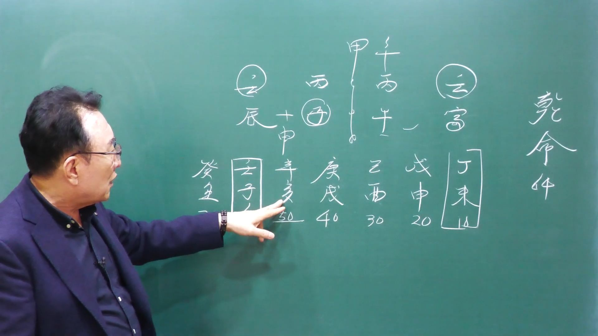

남촌물상TV 전체 문서 › 동영상 V0125
결혼은 한번의 기회가 일생을 좌우한다

| 문서 번호 | V0125 (동영상) |
|---|---|
| 영상 URL | https://www.youtube.com/watch?v=Utf52e2HNtU |
| 영상 ID | Utf52e2HNtU |
| 게시일 | 2025-04-28 |
| 길이 | 19:38 (1178초) |
| 조회수 | 592회 (수집 시점 기준) |
| 카테고리 | Howto & Style |
| 자막 | ko (자동생성) |
| 수집 시각 | 2026-08-30 19:08 (KST) |
영상 설명 (YouTube 설명 원문 그대로)
한번의 결혼은 기회를 노치면 후해한다
결혼은 그 시기가 매운 중요하다.
누구나 한번 결혼하지만 누구를 만나느냐가 결정한다
전체 자막 (470구간 · 타임스탬프 클릭 시 해당 장면으로 이동)
[0:00][음악]
[0:05]자, 오늘은 그 특별한 사주입니다.
[0:08]음. 그 어 사람이 평생 가서 결혼을
[0:11]못 한 사람 사주를 가지고 있는데 왜
[0:14]결혼을 못 하고 어, 평생 그 남자가
[0:17]혼자 살아야 되겠는가?이 좀 특이한
[0:19]사주죠. 이런 경우는 좀 드물어요.
[0:21]근데 여러분들이 확실하게 아마 해
[0:24]보셔야 될 겁니다. 자,이
[0:27]명조에에 64세 남자인데 이민 병호
[0:31]병자 임진 이제이 사주인데이 사람은
[0:35]특징이 평생 결혼을 못한 사람이다.
[0:38]왜 결혼을 못 했을까 하는 것이
[0:40]굉장히 궁금하잖아요. 어떻게 보면 그
[0:42]사람이이 살아나가는데 못하고 결혼도
[0:45]못 하고 사는 거 좀 그렇죠. 음.
[0:48]자, 그러면 왜 못했을까? 이게 한번
[0:51]얼른번 짚어
[0:52]봅시다. 우선 결혼이 지금
[0:55]병사주예요. 그럼 우리가 병화
[0:57]일관들은 대부분이 결혼할 시기가
[1:00]임수에 떠 있고 물이 막어져 있을 때
[1:02]재방이 돼 있을 때 제일 안정이
[1:04]좋다고 그랬는데이 사람 물이 두 개
[1:07]있어요. 그러다
[1:08]보니까이 무토로 막을 수 막어서 떠도
[1:13]태양이 두 개 뜨잖아요. 그게
[1:15]혼란스럽고 지지의이 합을 이루질 때가
[1:18]제일
[1:20]좋은데이 진토와 자수가 있어서
[1:24]신자진이 될 때 부부 합이라도
[1:26]찾아봐야 된다. 근데 합이 되도 잘
[1:28]안 되게 돼 있어.이 사주가. 그럼
[1:31]우선 대운으로 볼 거 같으면 여기에
[1:33]신자진이 돼 있어서 결혼 시기는 이때
[1:36]한 뿐이었어요. 근데 무토가 와서이
[1:39]임수의 재방 역할을 해도 병어가 같이
[1:42]뜨기 때문에 어렵다. 그런데 내가
[1:45]신자진이 하니까 내가 차지할 수가
[1:47]있는데 그 말이에요. 근데이 기는 한
[1:49]번 있었을요. 근데 20대 신잔이
[1:52]되지
[1:53]않습니다.이 자수는 신자지 부의 합이
[1:56]이루어질 때가 신자지 하나예요. 다른
[2:00]것은 뭐 진진토는 진유학금 뭐 뭐 뭐
[2:03]신자진 이런 개입이 되지만 이거는
[2:05]신자진이라는 얘기 자수는 딱 신자진
[2:08]하나밖에 없어요. 어 합이 이루어질
[2:10]때가 그러기 때문에 이제
[2:13]어려운데 또 30대 가서 보니까
[2:16]기토로서 물을 막어도 탁수 그다음에
[2:18]자오묘유 음 또 40대 가서도 뭐냐
[2:22]인호술인데 내가 밝어진게 아니라 외가
[2:25]밝아져 또 60대 오니까 인재 회복
[2:28]해자 쪽 탁수이 개념이다. 이렇게
[2:30]해서이 사람이 평생 동안 결혼이
[2:33]이루어지지 않는 걸로 봐야 된다.
[2:36]그래서 제가 연도를 한번 지어
[2:38]봤어요. 여기 보시면 31세가
[2:42]임신년이에요. 임신년. 그럼 자 세
[2:45]개의 무리
[2:48]합에서이 하나가 됐지 않습니까?
[2:51]됐는데 정화 입장에서 정화 입장에서
[2:54]정립 한목 을목이에요. 그러면 자
[2:57]을목이 온다니 임묘진이 되잖아요.
[2:59]그럼 나하고 관계 뿌리가 안
[3:02]돼요.이 부부 합임묘진이 되기 때문에
[3:04]안 된다 그 말이에요. 이제 이런
[3:06]과정이 계속 역심이 되고 그다음에
[3:09]43대 갑신형이 오면은 갑목의 나무가
[3:13]가려 준다고 해요. 신자지 돼요.
[3:15]근데 갑목의 뿌리는 어디예요? 여기란
[3:18]말이에요. 근데 뿌리가 이루지질
[3:20]않아요. 그다음에 55세가제
[3:24]대운이에요. 세개 하나가 되 병신이
[3:26]내가 오잖아요, 지금. 자, 그러면
[3:28]내가 와서 좋다. 근데 이것도 결혼이
[3:31]불합리합니다. 왜 그러냐?
[3:34]라면 병화가 왔을 때는 쓰병이 됐다고
[3:37]봐요. 그럼 하나가 돼요. 그런데
[3:40]병화가 왔어도 인호수 하면 여기
[3:44]위에요. 내하고는 하등의 관계성이
[3:48]되지 않기 때문에 이런 사주는 사실상
[3:51]결혼하기가 굉장히 어렵다라고 본다.
[3:54]자, 그래서 평생 동안이 사람이
[3:56]상담한 결과 64세 될 때까지도
[3:59]결혼을 못 해고 살는 사람이다 그
[4:02]말이에요. 그래서 오늘 특이한 사주를
[4:04]설명을 드렸습니다. 자, 우리가 이제
[4:06]이러한 공부를 했을 때 결혼을 하고
[4:09]살아야 되는데 평생 또 못 하고 사는
[4:11]사람도 얼마나 있긴 있구나 하는 것을
[4:15]아셔야 된다 그 말이에요. 그러
[4:16]우리가 주위에서 결혼 안고 사신
[4:18]분들이 아, 이런 사람도 있구나는
[4:20]것을 여러분들이 아시고 상담할 때
[4:22]응하시면 좋겠습니다. 자, 그러면이
[4:26]사람이 그럼 어떤 사람의 특성을
[4:27]가지고
[4:29]있는가?이 사주의 재관을 보면은 일단
[4:32]관들이 다 있죠. 자, 자기가 간을
[4:36]깔고 있고 여기이 관이 국가자리
[4:39]있어요. 그러니까이 사람은 관으로서는
[4:42]다 깔려 있습니다. 근데 제가
[4:46]무죄사주예요. 제가 없어요. 자,
[4:48]우리가 제가 또 여자 아닙니까? 근데
[4:51]제가 뭐예요? 금 아니에요. 자,
[4:53]금이 오면 잘못하면 자음이 위야.
[4:56]그죠? 그러기 때문에이 사람 경우는
[4:58]결혼이 이루어질 수가 없다고
[5:00]확실합니다. 자,
[5:02]그다음에 경정사주는 이제에 그 뭘로
[5:07]가려 준다 그랬어요? 감목으로
[5:09]갑목으로 가려 준다 그랬잖아요. 근데
[5:11]갑목에 뿌리가 있어요. 그죠? 갑목이
[5:15]서게 되면은 인호술이 된다는 사실.
[5:18]그러니까 갑목의 성향이 있죠. 자,
[5:20]그럼 우리가 이렇게 딱
[5:23]보시면 전반교가 후반전에 두 번
[5:25]직업이 바뀔 수 있는 사람이에요.
[5:26]근데 이제 끝까지가 바뀌어 줘야
[5:29]되는데 도중에 바뀌지 못한다면 결말은
[5:32]그렇게 좋지 않아요. 자, 그 말은
[5:34]뭔 얘기냐?이 이 감목의 전반과
[5:36]후반주 나온다 보면 전반전에선
[5:40]인호술로서 교육에 관련된 일 할 수가
[5:43]있고 그
[5:44]말이고
[5:46]후반전에서는 갑목이 꽃을 핀 것도
[5:48]아니고 이거는 쉽게 해서 이제 명예
[5:50]쪽이 한다 그 말이야 물이 태양에
[5:52]뛰니까 관열 쓸 명예 쪽으로 가야
[5:54]되는데 이게 이제 교육의 뿌리가
[5:57]형석이 안 되니까 교육을 사실
[5:58]전반하고 끝나야 되는데이 사람은
[6:00]끝까지 갔었어요. 그러기 때문가
[6:03]있는거다 그 말입니다. 자 우리가
[6:05]운에 따라서 어떻게 흘러가느냐 또
[6:07]사주 옮겨 흘러가느냐 이걸 봐야
[6:09]되는데 병 사주가 보면 한시 이사
[6:12]경우는 이인자 사주밖에 못대 같은
[6:15]경쟁자도
[6:17]태양은 밝아져야 자기 능력을 발휘하는
[6:20]거예요. 병화 일관들은 밝아야 되는데
[6:23]항시 밝은데 뿌리가 인호수 제일
[6:25]유리한 사람 인호술이에요. 그러니까
[6:27]나는 안 밝아. 그럼 자, 태양이 두
[6:29]개 떠 있는데 밝은 사람이 밝아지지
[6:32]아 내가 태양 비선 발사 못 하면은
[6:34]농력이 안 된 거 아닙니까? 쉽게 볼
[6:36]수 있어야 돼요. 그러니까이 사람
[6:38]경우는 항시 웃 사람한테 좋은 일은
[6:41]다 해 주고 자기는 옛날 대회를 못
[6:43]받은 사람. 이제 이렇게 보시면
[6:45]돼요.이 일은 내가 죽도록 해 놓고
[6:48]자기는 상받을 때는 웃 사람이가 상을
[6:51]받을 수 있는 사주다 그 말이에요.
[6:53]자, 그러면이 사람이 제일 좋을 때가
[6:55]언제겠어요? 운이 전선 자 좋 좋다면
[6:59]자 좋을 때는 뭐예요? 이걸 제거시길
[7:01]때가 제일 좋잖아요.
[7:03]신금이 올 때가 제일 좋은 거예요.이
[7:07]신금이 병화를 제거하지 않는 한이
[7:10]사람은 항시 고달프고 이인자로 살아야
[7:13]될 수밖에 없다. 답이 딱 정해진
[7:17]겁니다. 그럼 우리가 봤을 때 이제
[7:19]이런 걸 잘 보시면 아하 이런
[7:21]관계에서선으로 봤을 때이 사람은 항시
[7:23]참 양보하고 뭔가 해놓고 참고 살아야
[7:27]되고 이런 결론을 지울 수 있는
[7:28]사람이기 때문에 사람은 참 제가 봐서
[7:30]그 착하고 순질하고 좋습니다. 사주
[7:33]자체가 청하지 않아요. 그러니까
[7:36]탁수된짓도 한 번씩 해 봐야 되는데
[7:38]너무 깨끗하다 보면은 맑은물에 뭐가
[7:40]안 살아? 고기간 살게 돼 있다.
[7:43]그것이 세상이 좋은 건 아니에요.
[7:45]흙탕물에는 미꾸라지도 살고 메기도
[7:47]살고 살아야 되는데 맑은물에 사는 건
[7:49]뭐가 살아? 일급수가 사는 거죠.
[7:52]그러면 저기 춘천 가면
[7:55]뭐 있어요? 또 춘천 가서 그 겨울에
[7:58]나는 거 빙어 빙어 요런 걸 얘기하는
[8:01]거예요. 그러니까 결과적으로 맑은물에
[8:03]사는 고기는 큰 고기 몸고 사네.
[8:05]이렇게 보시면 돼. 예. 그게 공
[8:07]막다고 좋은 건 아니에요. 음. 물론
[8:09]세상 삶 살 때 맑고 청하게 살면
[8:12]굉장히 좋긴 하죠. 근데 삶이라 것은
[8:14]어떻게 굴곡도 있어 봐야 된다라고
[8:16]하는 겁니다. 자, 그래서 볼 때
[8:19]자, 여기 사주 지지가 인호술과
[8:21]자오의 형태를 취하고 있죠.
[8:24]그죠? 그러니까 인호수리 할 때는
[8:27]맨날 가서 남의 이게 이게 된 거야.
[8:29]자, 그럼이 사람이 제일 필요한게
[8:31]뭐가 필요해요? 필요한 게 금이
[8:34]필요해요. 자, 금이 필요하고 또
[8:37]뭐가 필요해요? 땅이 필요 땅이
[8:39]필요하잖아요. 자,이 사람은 우선
[8:41]토라는이 무토가 굉장히 필요한
[8:44]사주예요. 토가. 근데 무토이 여기면
[8:47]왔잖아요. 네. 그러니까 학교 1일
[8:49]때 온 것뿐이야. 그지? 그러고 운이
[8:52]안 오잖아요. 근데 여기는 여기는
[8:55]자기 무토와 제가 같이 올 때
[8:57]아닙니까?
[8:59]근데 이것도 인신사의 개념을 갖고기
[9:02]때문에 사실 그 죄를 취할 수 없는
[9:05]인신사게 되면 쟤를 잘 못 취합니다.
[9:08]활동만 많이 하지. 결과물은 안
[9:09]생기는 거예요. 이제 그런 군이 겪힌
[9:12]거예요. 그러면 자 이런 사람들이 쭉
[9:15]살다 보면 자 무기토 또 기토 탁수
[9:19]탁수가 안 되려면 감목을 뿌려다 뿌리
[9:21]없는 흙이 토가 없는 나무가 되죠.
[9:23]그렇죠. 그다음에 경이 왔다. 재물이
[9:26]왔는데 인노수이 되면이 재물은
[9:28]인호수를 여기서 가져가네. 그냥 쉽게
[9:31]돈도 뭐예요? 인호술이 되는데 여기가
[9:34]인호수이 되게 되면이 재물이 요리
[9:36]갈게 나한테 오지 않잖아. 내가
[9:38]갈까이 사람이 가져갈 거다. 그
[9:40]말이에요. 이제 여기 와서 여기
[9:43]와서이 사람이 이제 능력 발리가 되는
[9:44]거죠. 자 합으로 제거를 해.
[9:48]그리고 이제 이게 이제 아까 근데
[9:51]이내 한목은 되잖아요. 이때 이제
[9:54]교육자로 가면 최고 저희 50대
[9:56]60대 사이니까 교장까지 할 수
[9:58]있다. 이렇게 보는 겁니다.
[10:01]자기는 장학사가 되고 싶은 사실
[10:03]교주로 갔답니다. 근데 그 길로 간도
[10:06]못 하고 결과에 못 간 거다. 그러면
[10:09]자 왜 사립학교를 갈 수밖에
[10:11]없었던가?
[10:13]자, 그럼 우리들이 이제 봤을 때
[10:15]밝은 태양이 다 차지하고 자기는
[10:18]어두운 어두운 병화예요. 음.
[10:20]그러니까 어두운 쪽으로 할 수밖에
[10:21]없는 거예요. 그래서 국가 자리에
[10:24]인호술로서
[10:25]병화가 뜨면은 공립 뜨지 못하면 사립
[10:30]이렇게 구별할 수 있는 거예요.
[10:31]그래서이 사람 경우는 사립받고 선생
[10:34]할 수밖에
[10:36]없다. 자 그러면 이런 사람들 경우에
[10:38]이제 우리가 그 우리의 간범이나
[10:41]우리의 어떻게 하면 더이 사람을
[10:42]발전시킬 수 있는가를 봐야 되지
[10:44]않아요. 자, 그러면 우리는 항시
[10:46]얘기할 때 국내에서는 충청도권을 가야
[10:49]되고 땅이 없을 때는 예국을 가라고
[10:51]했잖아요. 그럼 자, 우리가 잘
[10:53]봅시다.이 사람이 예국 유학을 갔다고
[10:56]가정을 해 봐요. 그러면 쓰병이
[10:59]되죠. 하나가 더 되죠. 자,
[11:00]좋잖아요. 그럼 자, 땅이 넓은 땅에
[11:03]무토 땅으로 소위 대륙을 낀 나라로
[11:05]가게 된다. 그럼 뭐가 돼요? 무토가
[11:07]될 거 아니에요. 자, 그러면 대륙을
[11:10]낀 나라에서 세계 병 하나가 되니까
[11:12]태양이 뜨고 자기가 공부만 이옷을
[11:15]뿌리가 공부만 하면 잘할 사람이지.
[11:17]그럼 이런 이런 사람 경우는 소위
[11:19]박사도 충분할 수 있는 사람이고
[11:21]애국에서 공부를 했다면이 사람은
[11:24]굉장히 크게 교수는 사주가 된다이
[11:26]말이죠. 근데 국내에서 하기 때문에
[11:28]어려워. 왜? 자기가 태양의 빛을 다
[11:31]발사 못 한다가 자기 능력이 잘 안
[11:34]된다가 이렇게 된단 말이에요. 그럼
[11:35]자 미국에 가서 보면 경신의 나라로
[11:37]갔다 말이에요. 저렇죠? 경신이나
[11:40]갔다. 자 경신으로 가면 자기 재물이
[11:42]돼요? 안 돼요? 병 하나 재물에다가
[11:45]또 신자진이 되죠. 네. 그
[11:46]유통쪽에서 사업성도 굉장히 좋은
[11:48]사람이 된다.이 이렇게 되는데 사람의
[11:51]팔자라는 것을 우리가 바뀌어 줘야
[11:54]되는데 타고난 팔자만 가지고 안 되면
[11:58]환경의 지배를 바꿔 줘야 되는
[11:59]법이에요. 그래서 우리는 진로 상담할
[12:02]때 우리가 하는 것은이
[12:04]학생이 좀 더 크게 보고 진도로면
[12:07]유학을 가야 될 사람 또 국내에서
[12:09]지역을 어느 지역에 선정할 사람
[12:11]이것을 짚어질 줄 아는 사람들이
[12:14]우리가 할
[12:15]일이에요. 우리는 그걸 해 줘야 되고
[12:18]그 사람들이 잘 나가게 해 줄 수
[12:20]있고 행복하게 잘 사주는 길을
[12:21]만들어서 우리가 대줘야 한다 그
[12:23]말입니다. 그래서이 사람은 만약에
[12:25]미국으로 유학을 갔다면 갔다면 얼마나
[12:29]좋습니까? 신자진 자기 재물 경금
[12:32]뿌리 다 오지요. 재물도 취하지요.
[12:34]또 인신사회 될 수도 있어요. 유통업
[12:37]마케팅 사업성도 좋고 교육적으로
[12:40]가더라도 목화 통명이 돼서이 사람은
[12:42]훌륭한 교육자가 될 수 있다. 결론은
[12:44]이렇게 나온다. 음.
[12:47]자, 충분 이해되셨습니까? 네. 자,
[12:49]이렇게 이제 사주 구성에 우리는
[12:52]팔자를 바꿔 줄 수 있는 사람이 돼야
[12:54]돼요. 그냥 똑같이 사주 타고난 것만
[12:57]가지고 그러면 항시 팔적 안 좋은
[12:59]사람 맨날 그렇게 살아야 되느냐?
[13:01]이것을 바꿔 줄 줄 아는 우리가대
[13:03]줘야 우리가 진짜 훌륭하고 잘하는
[13:05]역수가 되는 것이지. 그걸 안 하고
[13:08]있으면 그냥 뭐 너 이때 운이
[13:10]좋으니까 괜찮아. 안 좋아. 요렇게
[13:12]해서는 아무 도움이 안 되고 우리
[13:15]특히 무상하신 분들은 이건 특별하게
[13:18]체익해 줘야 돼요. 그래서 우리 그
[13:20]길을 만들어 주고 교육을 하지
[13:21]않습니까? 이것은 우리 물상 남촌
[13:24]물상남만이 가질 수 있는 특징이고
[13:26]여러분한테 제시해서 직접 출관을 해
[13:29]봐도 도움이 크게 가기 때문에 확신을
[13:30]갖고 설명하셔도 좋다. 음.
[13:34]자, 그러면이 사람이 지금 그 어
[13:36]결혼을 못 한 이유와이 사람이 직업
[13:39]선택이나 이런 부분을 설명을 드렸는데
[13:42]이제 한번 봅시다. 우리가 이제
[13:45]어렸을 때 보면은 어렸면 여기 미토가
[13:48]있잖아요. 자, 그러면 정미년 정미
[13:50]대운 어쩔 것이냐? 일단 정립한
[13:53]제거할 거 아닙니까? 제거해요. 근데
[13:56]없어도 태양은 두 개 떠요. 그러면
[13:58]자, 여기에서 해묘미와 사오미 개념이
[14:02]강하죠? 네. 겐성이 있단 말이에요.
[14:04]그러면 자, 밝아지면은 역시 또 다른
[14:07]놈이 가져가요. 그 능력 발리가 안
[14:08]되는 거예요. 항시. 그래서 얼마나
[14:11]억울했겠어요? 음. 자, 그다음에
[14:14]무신대원에는 무신대원 봐요. 자,
[14:17]무토가 왔어요. 자, 무토 왔다는 걸
[14:20]예상했다는 얘기는이 물을 제박을
[14:23]막으란 얘기 아닙니까? 그럼 우리는
[14:24]그때 당시 뭐냐면 학교를 대학을 가면
[14:26]어디로가게 좋겠어요? 대학권이랑 자,
[14:30]서울로 가면은 중앙대로 가야 되고.
[14:32]그다음에 지방으로 가면 충천권으로
[14:34]가야 된단 말이에요. 그때 상담을 해
[14:36]주셔야 돼. 할 거고 그다음에
[14:40]군대를 간다면 어디로 가야 돼요?
[14:42]육군이군. 자, 육군이 우선이야.
[14:44]근데 자기가 무리에 태양이 뜨는
[14:46]거예요. 그래서 해병대 가는 겁니다.
[14:49]이해하셨죠? 그래서 왜이 사람이
[14:52]해병대를 가야 되고 왜이 사람이 꼭
[14:56]그쪽을 택할 길이 뭐였는가를 보면은이
[14:59]사주 원국에 큰 땅이 필요해요.
[15:01]그니까 그럼 수증을 할 수 있는가
[15:03]해병대예요. 그 물 위에서 태양이 뜰
[15:05]수 있는 능력 발휘하기 때문에이
[15:07]사람은 지원의 해병대 장교
[15:09]추입니다. 자, 이런 것을 눈여 볼
[15:12]수 있다는 것은 우리가 충분하게
[15:14]얼마든지이 사람이 지역적인 안배 또
[15:17]군대 이런 것을 따질 수가 있는
[15:20]거예요. 자, 그러면 그러고 나서이
[15:23]사람은 한번 대운을 봐 봐요. 그럼
[15:26]이제 무신 대운에 무토가 막어 준다는
[15:28]얘기 아니에요? 자, 무토가 왔다는
[15:30]얘기는 무슨 뜻이에요? 나무를 심는
[15:32]거 아니 토라는 거 하 나무로
[15:34]존재하는 우리가 공부하실 때 토가
[15:37]왔다는 얘기는 나무를 심어야 돼.
[15:39]그래야 나무 땅이 갇치겠잖아요.
[15:41]그러면이 사람 입장에서는
[15:43]관의 관이죠. 네. 자, 병화의 관은
[15:47]임수, 임수의 관은 무토. 근데 관이
[15:50]왔기 때문에 뿌리가 인이 있어.
[15:51]그래서 인호술로서 할 수 있고 갑목에
[15:54]뿌리가 있기 때문에이 사람은 교육자
[15:56]길로 갈 수가 있다. 이렇게 보는
[15:58]거예요. 어, 그래서 당시 여러분들이
[16:01]그 생각하실 때 토이 딱 붙어 왔다.
[16:03]아, 무토 나무를 심어 전제가 돼야
[16:05]돼요. 음. 그래서 병화는 왜 나무심
[16:08]꼽힌 역할을 해야 돼. 이거란
[16:10]말이에요. 그래서 그런 것을
[16:12]여러분들이 그냥 임의적으로 생각과
[16:14]판단할 수 있다라고 본다. 그러면이
[16:17]기후대운 아닙니까?
[16:19]기후대운은 기토는 뭐예요? 감목을
[16:21]불러올 거 아닙니까? 그죠? 자,
[16:24]갑목을 불러오면은 오면은 태양도
[16:27]가리고 하나가 된다는데 지지해가
[16:29]자오묘예요.
[16:32]그러니까 자기 능력이 잘 안 되는
[16:33]거예요. 그래서이 사람이 끝까지 무슨
[16:35]얘기냐? 장교로서 끝까지 그냥 복수를
[16:39]저 경고를 할게 아니라 도중에 그만
[16:41]되게 돼인다 그 말이지. 그러면 자
[16:43]우리가 그 어 요새 학사장군들 또
[16:46]스타가 나오고 합니다. 그냥 그러니까
[16:48]관계가 공 그 공무 그 군대에서
[16:52]근무하더라도 끝까지 군인으로 갈
[16:54]것이냐 못 갈까는 여기서 구별이 되는
[16:56]거예요. 자이돼서 안 되는 건데
[16:58]끝나요. 어
[17:00]그래서 자기 대위 때 보통 끝나죠.
[17:02]대부 사람들이 중위 때 빨리 늦지면
[17:04]빨리면 중위 그러면 자 우리가 이제
[17:06]거기 학사 장교에 대한 쭉 그 저
[17:10]R2시 내가 체크를 해 놓은 거
[17:11]있어요. 왜? 여러분들이 공부하실 때
[17:14]도움이 되라고. 그래서 여러분들이
[17:16]학사 장군으로 가게 되면 정부 지원이
[17:18]어떻게 되고 또 몇 학년 때 지금 그
[17:20]학사 신청해야 되고이 부분을 제가
[17:23]자세하게 유인물로 설명을
[17:25]드렸습니다. 자 우리는 이제
[17:28]그다음에이 사람이 이제에 지금 사실
[17:30]경술 대운이 온다는 얘기라 경술
[17:32]대운까지도 사실 운이 안 좋은
[17:34]거예요. 40대까지. 자 경금이
[17:37]오면은 누가 체가요? 윗사람이
[17:40]체가잖아요. 재물. 그다음 지지에는
[17:42]자기 인호수이 되니까 자기가이 사람이
[17:44]다 가져가고 나한테는 없어. 그다음
[17:47]자 여기 와서 이제 능력이 바 50대
[17:49]와서 50대 와서 저 병신금을 병화를
[17:53]제거를 하고 경쟁을 제거하고 자기가
[17:55]무리에 뜨게 돼인다이 말이지. 그렇게
[17:58]뜨게 되고 지재해는 이거 인내 한목이
[18:01]되잖아요. 그래서 자기가 다니는
[18:03]학교의 최고로서 결과적 교장을 할 수
[18:06]있다. 여기까지가이 사람한테 핵심적인
[18:09]답이 된다 그 말입니다. 음.
[18:11]그리고 이제 여기 60와서 어쨌거나
[18:14]60대와서 물이 세 개가 됐잖아요.
[18:17]그럼 물이 더 많아졌는데 하나가 될
[18:19]거 있어요. 근데 지지의 자수가
[18:22]왔어요. 이게 문제야. 자수가
[18:25]신자진이 될 거냐 결과적으로 해자축
[18:27]탁수가 될 거냐예요. 근데이 사람이
[18:30]지금 제가 그 물이 많으면
[18:32]이세에대서는 어디로 가야 되냐? 자,
[18:34]충청도로 가야 된대요. 자, 그러면
[18:36]병화가 충청도에서 가장 센 데가
[18:39]세종시예요. 그래서 이제 충청도권을
[18:42]가게 되면 병어가 하나 더 있는 걸로
[18:44]여러분들이 생각을 해서 세 개가
[18:46]하나가 된 걸로 해서 여기에 길을
[18:49]정착을 해 봐라. 세종시로 가라.
[18:51]근데이 사람이 해보니까 자기 인맥이
[18:54]굉장히 좋은 사람이었어요. 상담해
[18:56]보니까 정치쪽에 인맥이 굉장히
[18:57]좋습니다. 그래서 제가이 사람이
[18:59]선정할 때 총청도권에 거기 세종시계
[19:02]관련된 쪽으로 가서 활동하시면 굉장히
[19:05]좋을 것이다. 이렇게 결론을 지어
[19:08]주었습니다. 그래서 오늘 유튜브
[19:10]보시는 그 선생님들도 이러한 결혼을
[19:13]못할 때는 왜 못한 사주가 되고 항시
[19:16]자기가 병 사주에서 밝아진 오행으로서
[19:20]자기가 능력 발휘를 못 했었고 나중에
[19:22]저걸 제거할 때 본인 능력 발휘가
[19:24]된다는 사실을 충분하게 이해하시면
[19:27]크게 공부하실 때 도움이 될 걸로
[19:29]봅니다. 자, 유튜브 공시 선생님 또
[19:31]열심히 하시고 다음 영상
[19:32]기대하겠습니다. 감사합니다.
[19:34][음악]
칠판 원국 판독 (영상 프레임을 AI가 시각 판독 · 원판 대조 필수)
乾造
천간
壬
천간
丙
천간
丙
천간
壬
지지
辰
지지
子
지지
午
지지
寅
판독 신뢰도: 중간
판독 노트: 乾命 64세(1962 壬寅년생), 대운 丁未10→壬子60 순행, 申子 반합 주석. 壬이 癸처럼 보이나 60갑자 정합으로 壬 판정 · 시점 18:00 · 해당 장면 보기↗
자막은 YouTube에서 제공하는 한국어 자동음성인식(ASR) 트랙의 원문입니다. 고유명사·한자 용어·숫자 표기에 자동인식 특유의 오류가 있을 수 있어, 원문을 가능한 한 그대로 보존했습니다. 위에 칠판 원국 판독 섹션이 있는 영상은 화면 프레임을 AI가 시각 판독한 것으로 신뢰도 표기를 확인하고, 없는 영상은 화면 도표가 문서에 포함되지 않습니다.